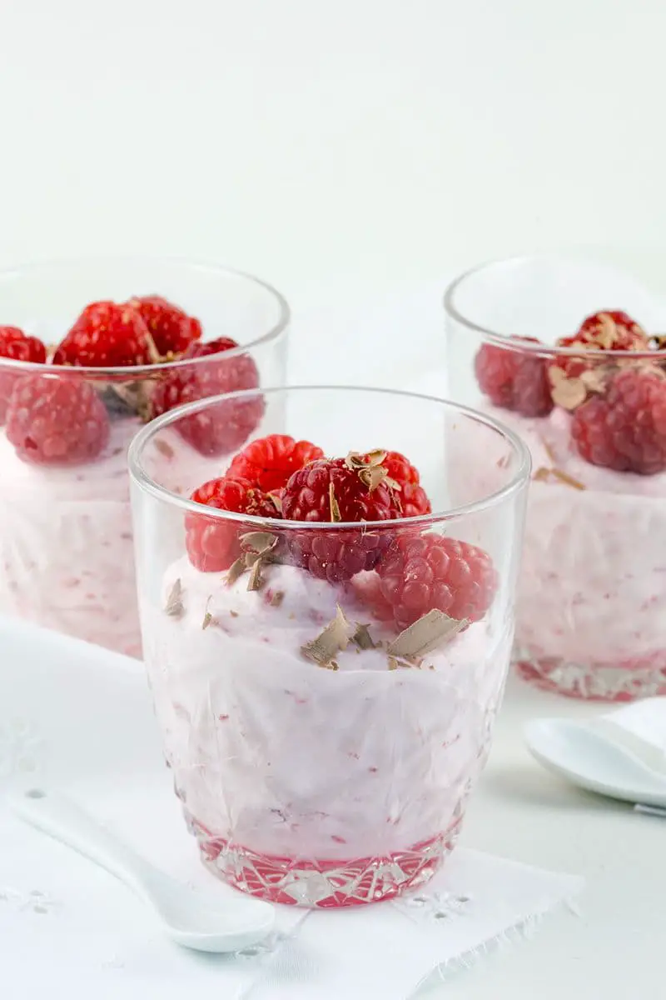

Deze frambozenmousse met witte chocolade is licht, luchtig en heerlijk fris, perfect om een maaltijd met gehaktbrood af te sluiten.
1. Pureer de frambozen met een blender of staafmixer. Passeer de frambozenpuree door een fijne zeef om de pitjes te verwijderen.
2. Smelt de witte chocolade au bain-marie of in de magnetron. Laat het een beetje afkoelen.
3. Klop de slagroom stijf met de poedersuiker en het vanille-extract.
4. Meng de gesmolten witte chocolade voorzichtig door de frambozenpuree
5. Voeg het frambozen-chocolademengsel toe aan de opgeklopte slagroom en vouw het voorzichtig in met een spatel tot alles goed gemengd is.
6. Verdeel de frambozenmousse over glazen of dessertkommetjes.
7. Laat de mousse minstens 2 uur opstijven in de koelkast.
8. Garneer met verse frambozen en muntblaadjes vlak voor het serveren.
Tip Serveer met lepel